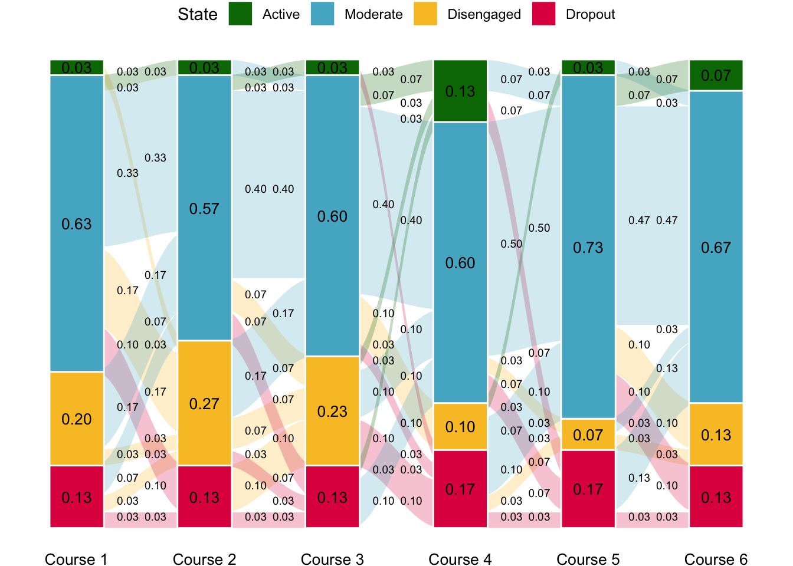

library(dplyr)
library(ggplot2)
library(ggalluvial)Recently, one of my collaborators asked me for the code that I used to generate one of the plots (Fig. 3) in our joined paper:
Mohammed Saqr, Sonsoles López-Pernas, Leonie V.D.E. Vogelsmeier, When, how and for whom changes in engagement happen: A transition analysis of instructional variables, Computers & Education, Volume 207, 2023, 104934, https://doi.org/10.1016/j.compedu.2023.104934.
I decided to share it in case it is useful for someone else.
The first step, as usual, is to load the necessary libraries.
Then we need some data. We will create a synthetic dataset for the purpose of this tutorial. We will create four possible states (states) and the probability to be in each state (probs), as well as define the number of simulated students (N). We will create a function that generates a random state based on the established probability distribution. We will then generate random states for all users across 6 time points following that probability distribution. We do that within a new dataframe where the user column represents the user number (between 1 and 30 in our case), the six following columns are each of the six time points, and the last column (Freq) holds the value 1 for every student (we will need this for the next step).
STATES <- c("Active", "Moderate", "Disengaged", "Dropout")
PROBS <- c(0.1, 0.65, 0.25, 0.2)
N <- 30
getRandom <- function(states = STATES, probs = PROBS, N = 30) {
factor(base::sample(states, 30, replace = TRUE, prob = probs), levels = states)
}
sample_data = data.frame(user=1:N,
`1` = getRandom(),
`2` = getRandom(),
`3` = getRandom(),
`4` = getRandom(),
`5` = getRandom(),
`6` = getRandom(),
Freq = rep(1,N))
sample_dataNow we transform the data into a format suitable for alluvial plotting using the to_lodes_form function. We input the previous dataset as the first argument to the function and we provide the range of columns that hold the timepoints as the axes argument. We then need to add make transformations, such as adding the count of each state per timepoint (Total) and calculating the proportion (Prop).
lodes <- to_lodes_form(sample_data, axes = 2:7) # From 1 to 6
lodesclean <- lodes |>
group_by(x) |>
add_count(Freq, name = "Total") |>
ungroup() |>
transform(Prop = Freq/Total)
lodescleanNow, we move on to the plotting part. We provide the lodesclean dataset as an input and specify the column containing the time point (by default x) as the x-axis variable. We do the same for stratum and alluvium. Additionally, we use the Prop column as y-axis variable and we color (fill) by stratum. Then we specify the necessary geometries. The first one (geom_flow), takes care of the transition flows between the time points. We can adjust the width parameter, the curvature (curve_type), the transparency (alpha), among other parameters. Next is geom_stratum, which takes care of drawing the bar plots that represent the states at each time point. We can customize the width again and the font color, among others. Then, we can add labels for both the stratums and the flows by specifying the placement in the stat argument. Adjusting the positioning can be very tricky and might require some trial and error, especially if you have modified the width of the different parts of the figure. Next, we define the color scale. We can choose to provide appropriate colors manually (scale_fill_manual) or use a predefined one from ggplot2. We can do additional aesthetics tweaks, such as changing the labels of the x-axis to Course 1, Course 2, Course 3, etc., switching the theme to theme_void to remove clutter in the figure, modify the legend position, and change the font size and color of the axis text.
ggplot(lodesclean, aes(x = x, stratum = stratum, alluvium = alluvium, y = Prop, fill = stratum)) +
geom_flow(width = 2/7, knot.prop = F,
curve_type = "sine", alpha = 0.25, aes.flow = "backward") + # Transitions
geom_stratum(width = .425, color = "white") + # Bars
geom_text(stat = "stratum", # Bar labels
aes(label = format(round(after_stat(prop), 2), nsmall = 2)), size = 3.5) +
geom_text(stat = "flow", # Transition labels
aes(hjust = ifelse(after_stat(flow) == "to", 2.75, -1.85),
label = ifelse(is.na((alluvium)), "",
format(round(after_stat(count)/1, 2), nsmall = 2))),
size = 2.5, vjust = "inward") +
scale_fill_manual(values = c("#007604", "#53b3cb", "#f9c22e", "#e01a4f"), "State") +
scale_x_discrete(labels = paste0("Course ", 1:6)) +
theme_void() +
theme(legend.position = "top", axis.text.x = element_text(color="#000000", size=10))
Citation
BibTeX citation:
@misc{lópez_pernas2024,
author = {López Pernas, Sonsoles},
title = {Alluvial Plots for Transition Analysis},
date = {2024-07-22},
url = {https://sonsoleslp.github.io/posts/alluvial/},
langid = {en}
}
For attribution, please cite this work as:
López Pernas, Sonsoles. 2024. “Alluvial Plots for Transition
Analysis.” https://sonsoleslp.github.io/posts/alluvial/.